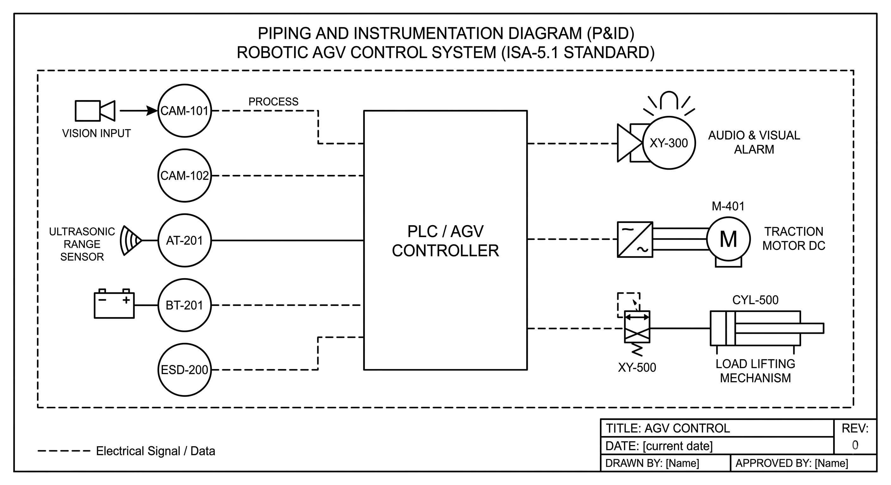

1. O Sistema Visão-AGV na Planta de Fertilizantes NPK
O projeto SCADA-Core Automática: Sistema de Controle Visão-AGV aplica os motores matemáticos da disciplina ECAA08 ao controle de um AGV (Automated Guided Vehicle) Logístico de Inspeção e Amostragem Química operando no Setor 300 de uma planta de fertilizantes minerais NPK. Em vez de expor operadores humanos diretamente à coleta manual em válvulas de tanques pressurizados de amônia ($\text{NH}_3$) e ácido fosfórico ($\text{H}_3\text{PO}_4$), o robô acompanha o engenheiro de campo em modo Follow-Me (Siga-me) utilizando uma rede neural MobileNet V2 via OpenCV e assume a operação de acoplamento com seu braço robótico linear.
🔄 Conversão de Controle: Do Drone Follow-Me OpenCV para o AGV Terrestre
A malha de visão computacional foi adaptada diretamente do projeto LuizFellipiFreire25/Drone-Follow-Me-OpenCV. Os controladores Proporcionais (P) calculados sobre as coordenadas da Bounding Box $(x, y, w, h)$ foram remapeados dos 3 eixos de voo de um VANT para os atuadores industriais do AGV:
Convertido para o Servo Motor de Esterçamento ($0^\circ\text{ a }180^\circ$), guiando as rodas dianteiras para manter o operador centralizado no quadro da câmera CAM-101.
Convertido para o sinal PWM do Motor DC de Tração (M-301), acelerando ou freando para manter distância segura pela área da Bounding Box (CAM-102).
Convertido para o Atuador Linear do Braço de Amostragem (A-301), ajustando a elevação e extensão para coleta nos pontos de amostragem.
Como o AGV compartilha corredores com pedestres e circula próximo a linhas de amônia anidra ($\text{NH}_3$, IDLH: $300\text{ ppm}$), qualquer falha de inferência visual, perda de Wi-Fi, travamento de roda ou entrada em nuvem tóxica ($\ge 25\text{ ppm}$) exige corte determinístico de tração em menos de $10\text{ ms}$ e intertravamento estrito entre o motor de tração e o braço coletor ($a_1 \rightarrow \neg m_1$).
2. Insumos do Sistema e Reações Monitoradas no Galpão NPK
👁️ Insumos de Visão & Navegação
- Fluxo de Vídeo RGB (
CAM-101): Inferência MobileNet V2 com limiar de confiança $> 50\%$ ($c_1$). - Geometria BBox $(x, y, w, h)$ (
CAM-102): Estimativa de distância frontal e detecção de invasão da zona vermelha $\le 0.5\text{ m}$ ($d_1$). - Waypoints RFID / LiDAR: Marcadores de corredor entre estações logísticas (
ST-01aDEP-401).
⚗️ Insumos Químicos da Planta NPK
- Amônia Anidra ($\text{NH}_3$): Fonte de Nitrogênio (N) pressurizada; vazamentos $\ge 25\text{ ppm}$ disparam
AT-201($g_1$). - Ácido Fosfórico ($\text{H}_3\text{PO}_4$ - $54\% \text{ P}_2\text{O}_5$): Fonte de Fósforo (P) para síntese de MAP e DAP no Reator
R-101. - Cloreto de Potássio ($\text{KCl}$): Insumo sólido transportado entre a Doca
DOC-101e o AlmoxarifadoALM-201.
🔋 Insumos de Potência & Segurança
- Pack de Lítio BMS (
BT-201): Monitora SoC ($<10\%$ ativa $b_1$) e Temperatura ($\ge 60^\circ\text{C}$ ativaR-06). - Encoders & Ponte H (
M-301): Detectam rotor bloqueado (PWM alto com $\text{RPM}=0$, RegraR-03). - E-Stop Físico (
ESD-200): Botão cogumelo NF para corte imediato de hardware ($s_1$).
Reações Exotérmicas de Neutralização Amostradas pelo AGV (Estações AMO-301 e R-101):
1. Síntese de MAP (Fosfato Monoamônico): $$\text{NH}_3\text{ (liq)} + \text{H}_3\text{PO}_4\text{ (aq)} \longrightarrow \text{NH}_4\text{H}_2\text{PO}_4\text{ (slurry)} \quad (\Delta H^\circ = -135\text{ kJ/mol})$$
2. Síntese de DAP (Fosfato Diamônico): $$2\,\text{NH}_3\text{ (liq)} + \text{H}_3\text{PO}_4\text{ (aq)} \longrightarrow (\text{NH}_4)_2\text{HPO}_4\text{ (slurry)} \quad (\Delta H^\circ = -228\text{ kJ/mol})$$
3. Diagrama P&ID do Visão-AGV e Malha Logística do Galpão
Diagrama P&ID Oficial do Sistema de Controle Robótico do AGV (Norma ISA-5.1 — Setor 300)

Figura 1: Arquitetura P&ID mapeando as entradas de visão computacional (CAM-101, CAM-102), sensores de bordo (AT-201, BT-201, ESD-200), controlador lógico embarcado (CLP/SCADA-Core) e atuadores de saída (Alarme ALM-301 / XY-300, Motor DC M-301 / M-401 e Cilindro do Braço de Coleta A-301 / CYL-500).
Malha Topológica de Navegação do AGV no Galpão Industrial ($G = (V, E, W)$ — Etapa 02)
graph LR
subgraph S300["Malha Logística e Química do Galpão (Setor 300)"]
ST01["ST-01: Estação Base & Recarga BMS"]
DOC101["DOC-101: Doca de Recebimento NPK"]
ALM201["ALM-201: Almoxarifado de Insumos"]
AMO301["AMO-301: Ponto de Amostragem Química"]
R101["R-101: Reator de Neutralização MAP/DAP"]
DEP401["DEP-401: Depósito & Expedição"]
end
ST01 -->|"TAG-01 (15m)"| DOC101
ST01 -->|"TAG-02 (45m)"| ALM201
DOC101 -->|"TAG-03 (18m)"| ALM201
DOC101 -->|"TAG-04 (55m)"| R101
ALM201 -->|"TAG-05 (20m)"| AMO301
AMO301 -->|"TAG-06 (22m)"| R101
AMO301 -->|"TAG-07 (48m)"| DEP401
R101 -->|"TAG-08 (15m)"| DEP401
4. Catálogo Oficial de Tags do Visão-AGV e Corredores
4.1. Instrumentação Embarcada e Visão Computacional (Etapa 01 — Setor 300)
| Tag ISA-5.1 | Instrumento / Atuador | Sinal / Variável | Proposição | Setpoint / Limiar | Significado Lógico (Estado 1 / 0) |
|---|---|---|---|---|---|
CAM-101 |
Câmera Frontal RGB (MobileNet V2) | Taxa de Confiança ($0\dots 100\%$) | $c_1$ | $\text{Confiança} > 50\%$ | $1$: Operador Detectado / $0$: Alvo Perdido |
CAM-102 |
Medidor Geométrico de Bounding Box | Distância / Área ($0.2\dots 5.0\text{ m}$) | $d_1$ | $\text{Distância} \le 0.50\text{ m}$ | $1$: Zona de Colisão / $0$: Distância Segura |
AT-201 |
Transmissor/Detector de Gás $\text{NH}_3$ | $4-20\text{ mA}$ ($0\dots 100\text{ ppm}$) | $g_1$ | $C_{\text{NH}_3} \ge 25\text{ ppm}$ | $1$: Vazamento Tóxico / $0$: Atmosfera Limpa |
BT-201 |
Transmissor de Tensão / BMS Lítio | Estado de Carga ($0\dots 100\%$) | $b_1$ | $\text{SoC} < 10\%$ | $1$: Descarga Crítica / $0$: Bateria Normal |
ESD-200 |
Botão Físico de Emergência (Cogumelo) | Contato Seco (NF) | $s_1$ | Circuito Aberto | $1$: Emergência Acionada / $0$: Rearmado |
M-301 |
Motor DC de Tração Principal (Eixo Z) | Comando PWM Ponte H | $m_1$ | $P_{\text{mov}} = 1 \land \neg a_1$ | $1$: Tração Avançando / $0$: Freio Acionado |
A-301 |
Atuador Linear do Braço Coletor (Eixo Y) | Solenoide / Pistão | $a_1$ | $a_1 \rightarrow (\neg m_1 \land \neg F)$ | $1$: Braço Estendido / $0$: Recolhido |
ALM-301 |
Giroflex Visual e Sirene Sonora | Saída Digital Relé | $l_1$ | $F \lor d_1$ | $1$: Alarme Ativado / $0$: Silenciado |
4.2. Corredores Dirigidos e Waypoints RFID/LiDAR (Etapa 02 — Malha de Grafos)
| Tag Corredor | Origem ($u$) $\rightarrow$ Destino ($v$) | Distância Nominal ($W$) | Função Operacional na Planta | Ação em Bloqueio ($W \to \infty$) |
|---|---|---|---|---|
TAG-01 |
ST-01 $\rightarrow$ DOC-101 |
$15\text{ m}$ | Saída rápida da base para a doca de recebimento | Desvio pelo corredor secundário TAG-02 |
TAG-02 |
ST-01 $\rightarrow$ ALM-201 |
$45\text{ m}$ | Rota alternativa direta da base ao almoxarifado | Rota de contingência quando TAG-01/TAG-03 obstruídos |
TAG-03 |
DOC-101 $\rightarrow$ ALM-201 |
$18\text{ m}$ | Transporte de insumos entre doca e almoxarifado | Recálculo automático via Dijkstra em $<1\text{ ms}$ |
TAG-04 |
DOC-101 $\rightarrow$ R-101 |
$55\text{ m}$ | Corredor expresso lateral para a área do reator | Contingência para bloqueio no setor de amostragem |
TAG-05 |
ALM-201 $\rightarrow$ AMO-301 |
$20\text{ m}$ | Acesso principal à baia de amostragem química | Interditado se sensor AT-201 detectar $\text{NH}_3 \ge 25\text{ ppm}$ |
TAG-06 |
AMO-301 $\rightarrow$ R-101 |
$22\text{ m}$ | Corredor de inspeção entre amostragem e reator | Monitorado continuamente por visão CAM-101/102 |
TAG-07 |
AMO-301 $\rightarrow$ DEP-401 |
$48\text{ m}$ | Rota secundária de escoamento direto ao depósito | Ativado quando o corredor do reator (TAG-06) entra em trip |
TAG-08 |
R-101 $\rightarrow$ DEP-401 |
$15\text{ m}$ | Saída final do reator para o depósito de expedição | Trecho final da rota ótima nominal ($85\text{ m}$ totais) |